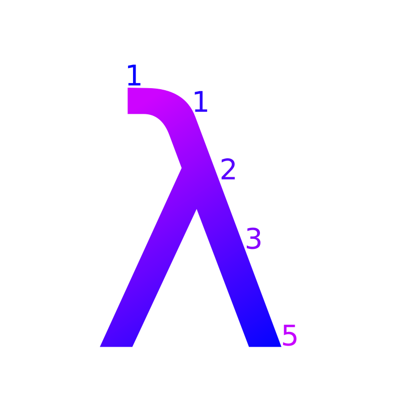

Home
About
Contact
Archive
Papers
Papers
Here's a list of papers I've written.
Modeling the Motion of Orbiting Bodies
— A study on using differential equations to model the orbits of celestial bodies. Written for Math 55 (Differential Equations).
By Taran Lynn. Published by College of the Redwoods on June 15, 2015.
The Square and nth Roots of Square Matrices
— Written for Math 45 (Linear Algebra).
By Taran Lynn. Published by College of the Redwoods on December 15, 2014.